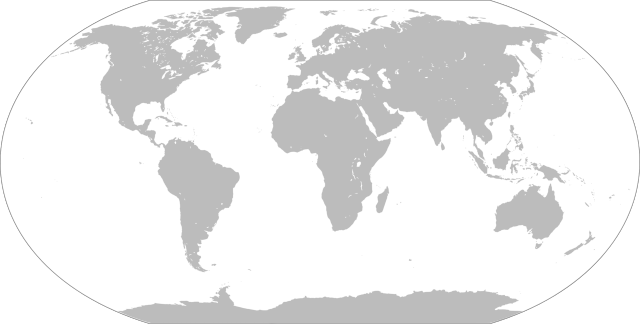

Welcome to our data visualization showcase! In today's digital age, data is everywhere, but making sense of it can be challenging. That's where data visualization comes in. By transforming raw data into graphical representations, we can uncover patterns, trends, and insights that might otherwise go unnoticed. Whether you're a business analyst, a researcher, or simply curious about the world around you, data visualization empowers you to explore complex information in a clear and compelling way. Join us on a journey through the fascinating world of data visualization, where numbers come to life and stories emerge from the data.
| Country | Population | GDP | ||||
|---|---|---|---|---|---|---|
| Total | Urban | Rural | Total (USD) | Per Capita (USD) | Growth Rate (%) | |
| United States | 328,200,000 | 82,300,000 | 245,900,000 | 21.43 trillion | 65,100 | 2.3 |
| China | 1,415,000,000 | 889,500,000 | 525,500,000 | 14.34 trillion | 10,100 | 6.1 |
| India | 1,366,000,000 | 460,300,000 | 905,700,000 | 2.94 trillion | 2,100 | 7.5 |
| Brazil | 211,000,000 | 176,300,000 | 34,700,000 | 1.87 trillion | 8,800 | 1.1 |
| Japan | 126,000,000 | 94,700,000 | 31,300,000 | 5.15 trillion | 41,000 | 1.9 |